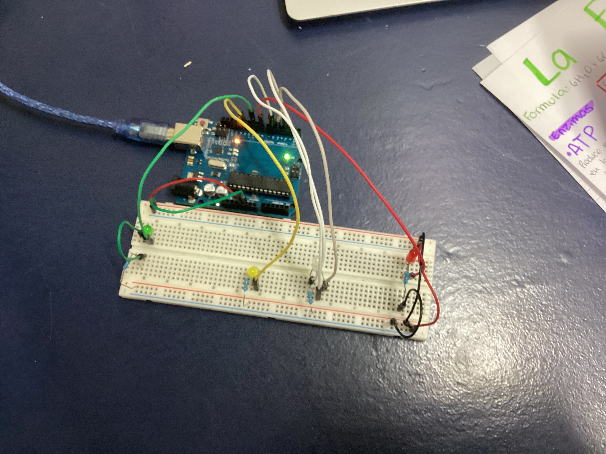

Contenido de la página WEB
Semana 1: Introducción a Arduino
Arduino es una plataforma de creación electrónica basada en hardware y software libre[cite: 4, 6]. En esta clase aprendimos las partes de la placa y la diferencia entre señales digitales y analógicas[cite: 20, 41, 44].
📄 Abrir PDF en pantalla completa
Semana 2: Estilos CSS
En esta semana aprendimos a usar tinkercard y aprendimos a realizar un circuito.
Video explicativo
Semana 3: Circuito de LEDs en Serie/Paralelo con Arduino
En esta sesión armamos un circuito físico utilizando la placa Arduino y una protoboard. Conectamos cuatro LEDs de diferentes colores (verde, amarillo, blanco y rojo) utilizando resistencias para proteger los componentes y cables puentes para programar sus encendidos.
Evidencia del Circuito
